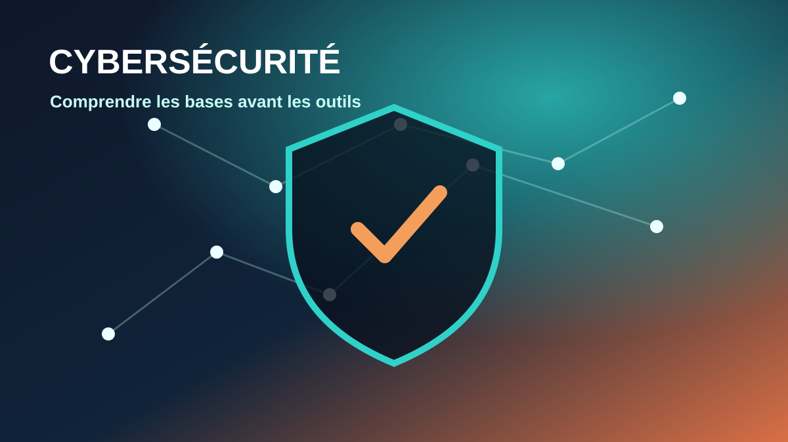

Les articles TianSemi partagent des bases techniques, des retours d’expérience et des guides pratiques pour
aider les étudiants à progresser en réseau, cybersécurité et numérique.
Tous les articles

Cybersécurité
Introduction à la cybersécurité : comprendre les bases avant les outils
Un article fondateur pour comprendre les enjeux, les menaces courantes et les premiers réflexes de
sécurité à adopter avant de se perdre dans les outils.